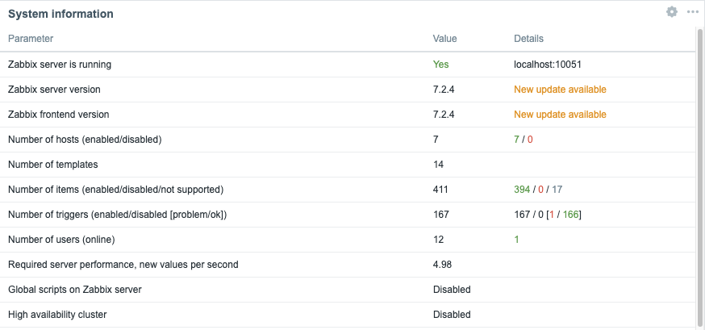
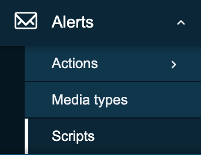

Explicação do front-end
Este capítulo abordará os conceitos básicos que precisamos conhecer no que diz respeito à interface de usuário do Zabbix e o que precisamos saber antes de começar a mergulhar totalmente em nossa ferramenta de monitoramento. Veremos como a interface do usuário funciona, como adicionar um host, grupos de usuários, itens... para que tenhamos uma boa compreensão do básico. Isso é algo que às vezes é esquecido e pode levar a frustrações por não sabermos por que as coisas não funcionam como esperávamos que funcionassem. Portanto, mesmo que você seja um usuário avançado, pode ser útil dar uma olhada neste capítulo.
Vamos começar
Visão geral da interface
Com o Zabbix 7, a interface do usuário após o login foi um pouco alterada. Nosso menu no lado esquerdo da tela passou por uma pequena reformulação. Vamos nos aprofundar nisso. Quando fazemos login em nossa configuração do Zabbix pela primeira vez com nosso usuário Admin, vemos uma página
Assim, temos nossa janela principalem verde,
nosso menu principalmarcado em vermelho e nossos
links marcados em amarelo.

2.1 Visão geral
O menu principal pode ser ocultado, recolhendo-o completamente ou reduzindo-o a um conjunto de pequenos ícones. Quando clicamos no botão com as duas setas à esquerda:

2.2 Recolher
Você verá que o menu se reduz a um conjunto de pequenos ícones. Pressionar ">>"
fará com que o menu principal do volte ao seu estado original.
Ao clicar no ícone que se parece com uma caixa com uma seta para fora, ao lado
do botão "<<", você ocultará completamente o menu principal do site .

2.3 Ocultar
Para trazer de volta nosso menu principal é bastante fácil, basta procurar o
botão à esquerda com três linhas horizontais e clicar nele. Isso mostrará o
menu principal , mas ele não permanecerá. Quando clicarmos na caixa com a
seta apontando para o canto inferior direito, o menu principal será mantido
em sua posição.
Outra maneira de aumentar a tela, bastante útil para monitores em equipes NOK,
por exemplo, é o botão kiosk mode. Esse botão, no entanto, está localizado no
lado esquerdo da tela e se parece com quatro setas apontando para cada canto da
tela. Pressionar esse botão removerá todos os menus e deixará apenas ajanela
principal para o foco.

2.4 Expandir
Quando quisermos sair do modo de quiosque, o botão será alterado para duas setas apontando para a parte interna da tela. Ao pressionar esse botão, voltaremos ao estado original.
2.5 Reduzir
Tip
We can also enter and exit kiosk mode by making use of parameters in our Zabbix
url: /zabbix.php?action=dashboard.view&kiosk=1 - activate kiosk mode or
/zabbix.php?action=dashboard.view&kiosk=0 - activate normal mode.
Note
There are many other page parameters we can use. A full list can be found at https://www.zabbix.com/documentation/7.4/en/manual/web_interface/page_parameters Zabbix also has a global search menu that we can use to find hosts, host groups and templates.
Se digitarmos na caixa de pesquisa a palavra server, você verá que teremos uma
visão geral de todos os modelos , grupos de hosts e hosts com o servidor
de nomes. É por isso que essa caixa é chamada deglobal search`.

2.6 Pesquisa global
Este é o nosso resultado depois de procurarmos a palavra server. Se você tiver
uma configuração padrão do Zabbix, sua página deverá ter mais ou menos a mesma
aparência.

2.7 Resultado de pesquisa global
Menu principal
Vamos agora examinar brevemente as seções constituintes do menu principal do
aplicativo. O menu principal , situado na interface à esquerda, compreende um
total de nove seções distintas:
| Nome do menu | Detalhes |
|---|---|
| Painéis de controle | Contém uma visão geral de todos os painéis aos quais temos acesso. |
| Monitoramento | Mostra-nos os hosts, problemas, dados mais recentes, mapas, ... |
| Serviços | Uma visão geral de todos os serviços e configurações de SLA. |
| Inventário | Uma visão geral de nossos dados de inventário coletados. |
| Relatórios | Mostra as informações do sistema, relatórios agendados, registros de auditoria, registros de ações, etc. |
| Coleta de dados | Contém todos os itens relacionados à coleta de dados, como hosts, modelos, manutenção, descoberta, ... |
| Alerta | A configuração de nossos tipos de mídia, scripts e ações |
| Usuários | Configuração do usuário, como funções de usuário, grupos de usuários, autenticação, toques de API, ... |
| Administração | A parte administrativa que contém todas as configurações globais, housekeeper, proxies, fila, ... |
Menu de links
Imediatamente subjacente ao menu principal do aplicativo na interface do lado
esquerdo está o menu Links. Esse módulo fornece uma coleção de hiperlinks
pertinentes para acesso do usuário.
| Nome do menu | Detalhes |
|---|---|
| Apoio | Isso nos leva à página de suporte técnico que você pode comprar da Zabbix. Lembre-se de que seu parceiro local também pode vender esses contratos e ajudá-lo em seu próprio idioma. Seus distribuidores locais |
| Integrações | A página oficial do zabbix página de integração |
| Ajuda | O link para a documentação de sua versão do Zabbix |
| Configurações do usuário | As configurações do perfil do usuário. |
| Sair | Sair da sessão atual. |
Alguns elementos interativos ainda precisam ser abordados na parte direita da tela.

2.8 Editar painel de controle
O botão Edit dashboard facilita a modificação da configuração do painel do
usuário, um recurso que será detalhado nas seções seguintes. Localizado na
margem esquerda extrema, há um ícone de marca de consulta ('?'), cuja ativação
redireciona o usuário para o portal de documentação do Zabbix, fornecendo
detalhes abrangentes sobre as funcionalidades do painel. Por outro lado, o
controle situado na margem direita, representado por três linhas horizontais,
fornece acesso a operações como compartilhamento, renomeação e exclusão de
painéis definidos pelo usuário.
Informações do sistema
O painel de controle também apresenta um painel dedicado denominado Informações
do sistema. Esse widget fornece uma visão geral em tempo real do status
operacional da implantação do Zabbix. Agora examinaremos os pontos de dados
individuais apresentados nesse painel, pois sua interpretação é crucial para a
compreensão do sistema.

2.9 Informações do sistema
| Parâmetro | Valor | Detalhes |
|---|---|---|
| O servidor Zabbix está em execução | O status do nosso servidor zabbix, se ele estiver em execução, sim ou não, e se estiver em execução em nosso host local ou em outro IP e em qual porta o servidor zabbix está escutando. Se nenhum trapper estiver escutando, o restante das informações não poderá ser exibido | IP e porta do servidor Zabbix |
| Versão do servidor Zabbix | Isso nos mostra a versão do servidor Zabbix. Portanto, a versão que você vê na parte inferior da tela é a versão do front-end do Zabbix e pode ser diferente, mas deve estar na mesma versão principal. |
Version Number |
| Versão de front-end do Zabbix | Essa é a versão do frontend e deve corresponder ao que você vê na parte inferior da tela. | Version Number |
| Número de hosts (ativado/desativado) | O número total de hosts configurados em nosso sistema | Quantos deles estão ativados e desativados |
| Número de modelos | O número de modelos instalados em nosso servidor Zabbix. | |
| Número de itens (ativado/desativado/não suportado) | Essa linha nos mostra o número de itens que configuramos no total, neste caso 99 | 90 estão ativados e 0 estão desativados, mas 9 deles não têm suporte. Esse último número é importante, pois são itens que não estão funcionando. Veremos mais tarde por que isso acontece e como corrigi-lo. Por enquanto, lembre-se de que um grande número de itens sem suporte não é uma boa ideia. |
| Número de gatilhos(Ativado/desativado [problema/ok]) | O número de gatilhos configurados | Número de acionadores ativados e desativados. Assim como nos itens, também verificamos se há acionadores que estão em um estado problemático ou em um estado ok. Um acionador em um estado problemático é um acionador que não está funcionando, algo que precisamos monitorar e corrigir. Também abordaremos esse assunto mais adiante. |
| Número de usuários (on-line) | Aqui vemos o número de usuários que estão configurados em nosso sistema | O número de usuários on-line no momento. |
| Desempenho necessário do servidor, nvps | O número de novos valores por segundo que o Zabbix processará por segundo. | Esse é apenas um número estimado, pois alguns valores que recebemos são desconhecidos, portanto, o valor real provavelmente é maior. Assim, podemos ter alguma indicação de quantos IOPS precisamos e quão ocupado está nosso banco de dados. Uma indicação melhor é provavelmente o item interno zabbix[wcache,values,all] |
| Scripts globais no servidor Zabbix | Ele nos notifica de que os scripts globais estão ativados ou desativados na configuração do servidor. | Os scripts globais podem ser usados em nosso frontend, ações, ... mas precisam ser ativados primeiro |
| Cluster de alta disponibilidade | Ele nos mostrará se o cluster Zabbix HA está desativado ou não | Atraso no failover quando o HA é ativado |
Enabling Global script execution
Global script execution on Zabbix server can be enabled by setting
EnableGlobalScripts=1 in the Zabbix server configuration at /etc/zabbix/zabbix_server.d/.
For new installations, since Zabbix 7.0, global script execution is
disabled by default.
Tip
System information may display some additional warnings like:
- when your database doesn't have the correct character set or collation UTF-8.
- when the database you used is lower or higher then the recommended version or
- when there are misconfigurations on housekeeper or TimescaleDB.
Another warning you can see is about database history tables that aren't upgraded or primary keys that have not been set. This is possible if you are coming from an older version before Zabbix 6 and never did the upgrade.
O menu principal explicado
É importante saber que até agora vimos nosso painel de controle com o usuário
Admin e que esse usuário é um usuário Zabbix Super Admin. Isso tem um grande
impacto sobre o que podemos ver e fazer no Zabbix, pois esse usuário não tem
restrições. O Zabbix trabalha com três níveis diferentes de usuários: os
usuários comuns , Zabbix Admin e Zabbix Super Admin. Vamos dar uma olhada
mais profunda nas diferenças:

2.10 Seções do menu principal
- Um
usuário do Zabbixverá apenas a parte vermelha do nossomenu principale poderá ver apenas os dados coletados. - Um
administrador do Zabbixverá a parte vermelha e a parte amarela domenu principal doe poderá alterar nossa configuração. - Um
Zabbix Super Adminverá omenu principalcompleto e, portanto, poderá alterar a configuração e todas as definições globais.

2.11 Menu de monitoramento
- Problemas: Esta página nos dará uma visão geral de todos os problemas. Com o filtro, podemos ver os problemas recentes, os problemas anteriores e os problemas que estão ativos no momento. Há muitos outros filtros para detalhar mais.
- Hosts: Isso nos dará uma página de visão geral rápida com o que está acontecendo em nossos hosts e nos permitirá acessar rapidamente os dados, gráficos e painéis mais recentes.
- Dados mais recentes: Essa página é provavelmente a que eu mais uso, pois mostra todas as informações coletadas de todos os nossos hosts.
- Mapas: O local onde podemos criar mapas que são uma visão geral da nossa infraestrutura de TI, muito útil para obter uma visão geral de alto nível da rede.
- Descoberta: Quando executamos uma descoberta de rede, este é o local onde podemos encontrar os resultados.

2.12 Menu Serviços
- Serviços: Esta página nos dará uma visão geral de alto nível de todos os serviços configurados no Zabbix.
- SLA: Uma visão geral de todos os SLAs configurados no Zabbix.
- Relatório de SLA: Aqui podemos ver todos os relatórios de SLA com base em nossos filtros.

2.13 Menu Inventário
- Visão geral: Um local onde podemos ver todos os dados de inventário que recuperamos de nossos hosts.
- Hosts: Aqui podemos filtrar por host e ver todos os dados de inventário dos hosts que selecionamos.

2.14 Menu Inventário
- Informações do sistema: As informações do sistema são um resumo dos principais dados do servidor Zabbix e do sistema.
- Relatórios agendados: O local onde podemos agendar nossos relatórios, um
pdfdo painel que será enviado em uma data e hora especificadas. - Relatório de disponibilidade: Uma boa visão geral em que podemos ver qual
acionador esteve em
ok/nokestado por quanto % do tempo - Os 100 principais acionadores: Outra página que visito muito: aqui temos
nossa lista principal com os acionadores que estiveram em um estado
NOK. - Registro de auditoria: Uma visão geral da atividade do usuário que ocorreu em nosso sistema. Útil se quisermos saber quem fez o quê e quando.
- Registro de ações: Uma visão geral detalhada de nossas ações pode ser encontrada aqui. Que correspondência foi enviada para quem e quando...?
- Notificações: Uma visão geral rápida do número de notificações enviadas a cada usuário.

2.15 Coleta de dados
- Grupos de modelos: Um local para agrupar logicamente todos os modelos em diferentes grupos. Antes, eles eram misturados com hosts em grupos de hosts.
- Grupos de hosts: Uma coleção lógica de diferentes hosts reunidos. Os grupos de hosts são usados para nossas permissões.
- Modelos: Um conjunto de entidades, como itens e acionadores, pode ser agrupado em um modelo. Um modelo pode ser aplicado a um ou mais hosts.
- Hosts: O que precisamos no Zabbix para monitorar um host, aplicativo, serviço ...
- Manutenção: O local para configurar nossas janelas de manutenção. Uma manutenção pode ser planejada nesse local.
- Correlação de eventos: Quando temos vários eventos que disparam gatilhos relacionados, podemos configurar correlações neste local.
- Descoberta: Às vezes gostamos de usar o Zabbix para descobrir dispositivos, serviços,... em nossa rede. Isso pode ser feito aqui.

2.16 Menu de alertas
- Ações: Esse menu permite configurar ações com base nos
eventosdo Zabbix. Podemos criar essas ações para gatilhos, serviços, descoberta, registro automático e eventos internos. - Tipos de mídia: O Zabbix pode enviar mensagens, e-mails etc... com base nas ações que configuramos. Esses tipos de mídia precisam de modelos e precisam ser ativados.
- Scripts: No Zabbix é possível utilizar scripts em nossas ações e front-end. Essas ações precisam ser criadas aqui primeiro e configuradas.

2.17 Menu de usuários
- Grupos de usuários: A seção do menu
User groupspermite a criação e o gerenciamento de grupos de usuários para simplificar o acesso e o controle de permissões. - Funções de usuário: A seção do menu
User rolesdefine conjuntos de permissões que podem ser atribuídas a usuários individuais, limitando suas ações permitidas com base no tipo de usuário que eles têm no sistema. - Usuários: A seção do menu
Usersfornece a interface para gerenciar contas de usuários individuais, incluindo configurações de criação e modificação. - Tokens de API: A seção do menu
API tokensgerencia credenciais de autenticação especificamente projetadas para acesso programático à Interface de Programação de Aplicativos (API) do sistema, permitindo a automação segura e a integração com aplicativos externos. - Autenticação: A seção do menu
Authenticationdefine os métodos e as configurações usados para verificar as identidades dos usuários e controlar o acesso ao sistema.

2.18 Menu de administração
- Geral: A seção do menu
Generalna administração permite a configuração das principais definições e parâmetros de todo o sistema. - Registro de auditoria: A seção do menu
Audit logfornece um registro cronológico das atividades do sistema e das ações do usuário para monitoramento de segurança e solução de problemas. - Housekeeping: A seção do menu
Housekeepingconfigura tarefas de manutenção automatizadas para gerenciar dados históricos e o desempenho do sistema. - Proxies: A seção do menu
Proxiesgerencia a configuração e o monitoramento de servidores proxy usados para comunicação com hosts gerenciados em ambientes distribuídos. - Macros: A seção do menu
Macrospermite a definição e o gerenciamento de variáveis globais para a configuração flexível do sistema. - Queue: A seção do menu
Queuefornece informações em tempo real sobre o status de processamento das tarefas internas do sistema e do tratamento de dados.
Info
More information can be found in the online Zabbix documentation here
Tip
You will see that Zabbix is using modal forms in the frontend on many places.
The problem is that they are not movable. This
module created by one of the Zabbix developers UI Twix will solve this problem
for you.
Warning
At time of writing there is no Dashboard import/export functionality in zabbix. So when upgrading dashboards it needs to be created by hand. It was on the roadmap for 7 but didn't made it so feel free to vote https://support.zabbix.com/browse/ZBXNEXT-5419
Conclusão
O frontend do Zabbix funciona como o centro de comando central para monitoramento, configuração e reconhecimento do sistema. Neste capítulo, você explorou como navegar pela interface, desde painéis e o menu principal personalizável até ferramentas poderosas, como informações do sistema e pesquisa global. Você aprendeu como cada seção do menu (Monitoramento, Coleta de Dados, Alertas, Usuários, Administração e outros) se alinha a funções distintas e como o modo de quiosque e os controles de layout ajudam a otimizar a visibilidade durante as operações diárias.
Além disso, o widget de informações do sistema se destaca como um instantâneo de diagnóstico em tempo real, revelando métricas críticas, como status do servidor, número de hosts, modelos, itens, acionadores e atividade do usuário, o que ajuda na rápida solução de problemas e na avaliação do desempenho.
Ao dominar esses componentes de front-end, você estará mais bem equipado para navegar com confiança no Zabbix, gerenciar o acesso do usuário, interpretar os dados de monitoramento e manter seu ambiente com mais eficiência. Esse conhecimento básico estabelece as bases para uma exploração mais profunda da configuração do host, dos mecanismos de autenticação e dos fluxos de trabalho de monitoramento avançado nos capítulos seguintes.
Perguntas
-
Qual seção do front-end (Monitoramento, Coleta de dados, Alertas, Usuários ou Administração) você acha que usará com mais frequência no seu trabalho diário e por quê?
-
Como o modo quiosque pode ser útil em um ambiente de monitoramento do mundo real e que tipos de painéis você exibiria com ele?
-
Quais percepções o widget de informações do sistema pode fornecer durante a solução de problemas e como ele pode ajudar a identificar problemas com o desempenho do servidor?
-
Por que é importante entender a diferença entre os dados exibidos em "Monitoramento" e as opções de configuração encontradas em "Coleta de dados"?
-
Se você estivesse integrando um novo membro da equipe, quais partes do front-end você mostraria a ele primeiro e por quê?
URLs úteis
- https://www.zabbix.com/documentation/current/en/manual/web_interface/frontend_sections/dashboards
- https://blog.zabbix.com/handy-tips-6-organize-your-dashboards-and-create-slideshows-with-dashboard-pages/17511/
- https://blog.zabbix.com/interactive-dashboard-creation-for-large-organizations-and-msps/30132/